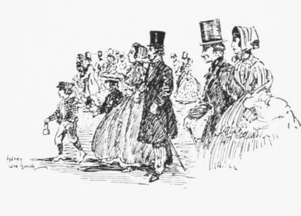

Fifty Years Ago. Continued
Description
This section is from the book "Stories Of Old Sydney", by Charles H. Bertie.
Fifty Years Ago. Continued
Howell's Mill, Parramatta.
When Grandpa was young.
When I made enquiries about the goldfields, I was not at all impressed with my chances. The Turon, I was told, was done, except for experienced men, and the Tambaroora was not recommended. An opportunity of seeing the fields arose, however, of which I shall tell you later.
At the time when I arrived, the successful digger was much in evidence. Many times at night I would hear a regular babel coming down the street. Two or three cabs filled with diggers and women would tear past me, everybody on board, including the drivers, being drunk, and shouting at the top of their voices. The party would stop at every public house and refresh themselves. The police had a very convenient method of rounding up these parties. They would wait until the diggers and their ladies were comfortably settled in a cab after a visit to a hotel, then mount the box, take the reins from the driver, and drive round comfortably to the nearest police station. AYhen the vehicle stopped, the fares would roll out in expectation of more refreshment and be gathered in. Next day one of the diggers would haul out a roll of notes and pay the whole of the fines. These celebrations became such a nuisance ultimately that the mayor, speaking from the bench after fining a party, threatened to deal heavily with any more offenders.
As it was in the beginning.
An Old Sydney Doorway.
Air. Stubbs (Old Stubbs, as he was called) was the Inspector of Xuisances at the period, and the prosecuting officer. He was wont to ride round the city on a dilapidated old horse on the look-out for nuisances. One night, however, a nuisance came to him. Mr. Stubbs opened his front door one morning to see a grinning crowd gazing at a deceased bullock planted on his very doorstep. He was quite angry and offered £1 reward for the perpetrators of the outrage.
In the Domain.
Having decided not to go to the goldfields, I looked round for a situation, and found one in a bank. I tired soon of the confinement, and requested to be sent out on the goldfields staff. The request was granted, and for the next ten years I got all the excitement I was looking for. The bank premises on a new field usually consisted of a 10 ft. x 8 ft. tent with a counter of bark. In the early days, moreover, we would be without a safe of any kind, and the knowledge that hundreds of pounds worth of gold was under your stretcher was not calculated to induce slumber.
We had many an exciting adventure in those days. I can recall a number, but the incident that stands out clearest in my memory is a story told me by a fellow official.
We were riding to the Meroo diggings, and one afternoon, after travelling over some ranges, we came out on a lovely plain on the
Collaroy Station. To my surprise I saw a cottage standing near the road.
We rode over and found it uninhabited, with all the doors open.
" This will be a fine place in which to camp to-night," I remarked.
I don't agree with you," said my companion. "But, look, it's going to rain, and will be very cold ; it's absurd to miss the chance/' I remonstrated.
Royal Hotel and Theatre Royal in 1838.
The Colonial Treasury, Lang Street.
" Never mind, come with me." He took me round the cottage and I saw that all the slabs which once comprised the floors of the rooms were taken up and propped against the walls.
" Now," he said, u I'm going down to camp by the springs, and I'll tell you a story to-night why I will not sleep here, and you'll quite agree with me/'
Convinced by his earnest tones I reluctantly followed my companion, and we pitched our tent some distance away from the cottage. After dinner he told me this tale:
"A few years ago another man and myself came over those ranges and rode up to that house just as we did to-day, only on that occasion it was pouring rain and night had fallen. We were very pleased to see the light from the house, and rode up to it. The door opened, and a man stood in the doorway and called out in a hearty voice: ' Take your horses round to the stables. You're going to stay with me to-night,'
" Now I'm not superstitious, but that night I think a guardian angel was near me. I don't know to this day why I said it, but I replied at once, ' No, thanks, we'll just come in for a time; we must push on.' My partner looked at me in surprise, and said under his breath, ' What bunkum ! Of course we'll stay.' ' No we won't,' I muttered. Inside the house our host gave us a warm drink and pressed us to put up for the night. Before the other man could say anything I declined the offer with thanks.
" Immediately I entered the house the conviction strengthened within me (as far as I could see without any tangible reason) that danger lurked there. I got my companion out somehow, and on to his horse. His indignation at my spectral fears was not at all damped by the rain and cold that night.
Royal Victoria Theatre, Pitt Street.
"Some months afterwards a team was bringing wool down from the station, and the driver sent his little boy on to have the billy boiled by the time they arrived at the springs, where we are now camped. The boy forgot to get a match, and ran up to the house to ask for one. Seeing the door open he walked in, and glanced through the door leading off the main room. He saw our host with some of the flooring slabs up digging a hole, and on the floor the body of a man. The boy ran off, and the digger chased him. Fortunately the boy was fleet and escaped to tell his father, who kept his own counsel, but took occasion before they started next morning to go up to the house. He found the owner looking very uneasy, but when the visitor only asked for a little flour the hut-keeper appeared reassured. During his absence to obtain the flour the father looked into the room that the boy had indicated.
On his arrival at the nearest township, next day, he reported the matter to the police, and the following day two troopers arrived at our friend's house and arrested him. On digging up the floors of his house they found the remains of thirteen men, and three more outside.
" Do you wonder why I would not sleep there?"
Printed by W. C, Penfold & Co., 183 Pitt Street, Sydney.
Continue to: